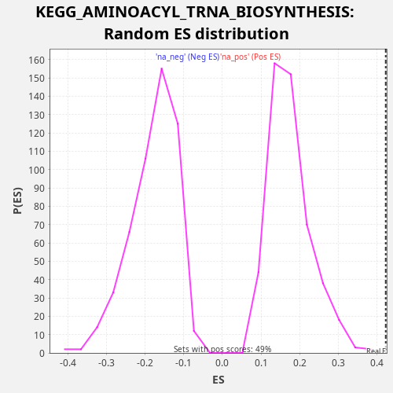

Profile of the Running ES Score & Positions of GeneSet Members on the Rank Ordered List
The same image in compressed SVG format
| Dataset | CCLE |
| Phenotype | NoPhenotypeAvailable |
| Upregulated in class | na_pos |
| GeneSet | KEGG_AMINOACYL_TRNA_BIOSYNTHESIS |
| Enrichment Score (ES) | 0.42326084 |
| Normalized Enrichment Score (NES) | 2.4262116 |
| Nominal p-value | 0.0 |
| FDR q-value | 9.7061077E-4 |
| FWER p-Value | 0.013 |
| SYMBOL | RANK IN GENE LIST | RANK METRIC SCORE | RUNNING ES | CORE ENRICHMENT | |
|---|---|---|---|---|---|
| 1 | FARS2 | 105 | 1.413 | 0.0411 | Yes |
| 2 | CARS2 | 252 | 0.220 | 0.0804 | Yes |
| 3 | NARS2 | 1765 | 0.002 | 0.0625 | Yes |
| 4 | EARS2 | 2788 | 0.000 | 0.0651 | Yes |
| 5 | SARS2 | 3073 | 0.000 | 0.0987 | Yes |
| 6 | MARS2 | 3102 | 0.000 | 0.1429 | Yes |
| 7 | WARS2 | 4219 | 0.000 | 0.1416 | Yes |
| 8 | LARS2 | 4325 | 0.000 | 0.1827 | Yes |
| 9 | YARS2 | 4846 | 0.000 | 0.2064 | Yes |
| 10 | TARS2 | 5414 | 0.000 | 0.2280 | Yes |
| 11 | AARS2 | 5591 | 0.000 | 0.2661 | Yes |
| 12 | IARS2 | 5791 | 0.000 | 0.3032 | Yes |
| 13 | RARS2 | 6865 | 0.000 | 0.3037 | Yes |
| 14 | HARS2 | 6941 | 0.000 | 0.3460 | Yes |
| 15 | MTFMT | 7063 | 0.000 | 0.3864 | Yes |
| 16 | PSTK | 8586 | 0.000 | 0.3681 | Yes |
| 17 | FARSB | 8971 | 0.000 | 0.3975 | Yes |
| 18 | VARS2 | 9441 | 0.000 | 0.4233 | Yes |
| 19 | FARSA | 11961 | -0.000 | 0.3632 | No |
| 20 | SEPSECS | 12124 | -0.000 | 0.4018 | No |
| 21 | PARS2 | 14751 | -0.000 | 0.3372 | No |
| 22 | DARS2 | 19357 | -0.002 | 0.1897 | No |

{kind=link}
{kind=link}